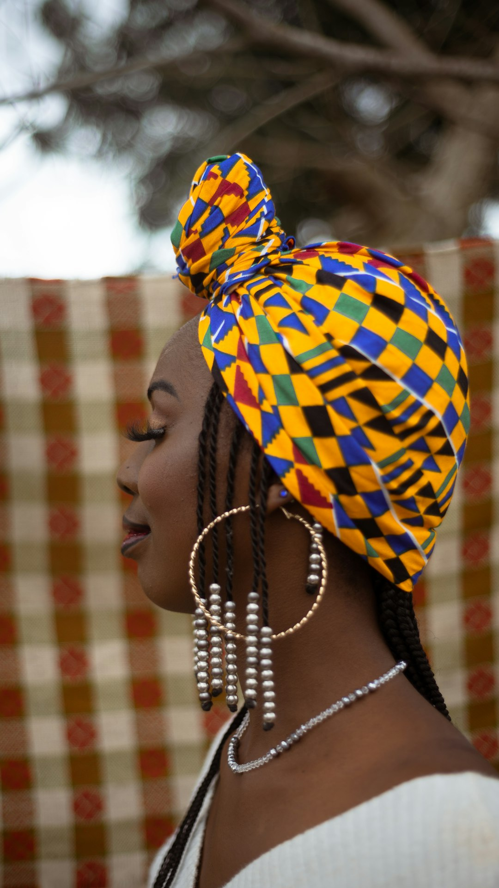
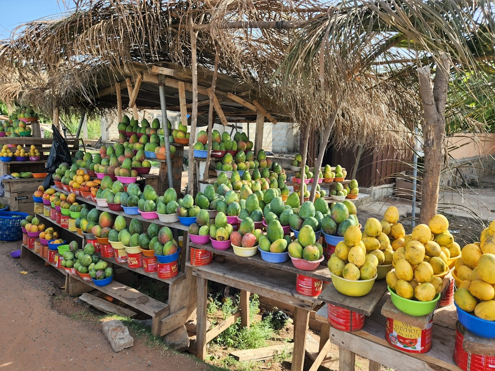
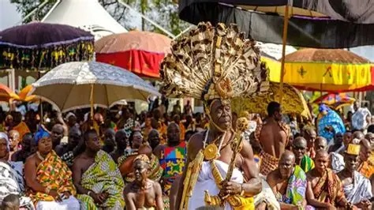
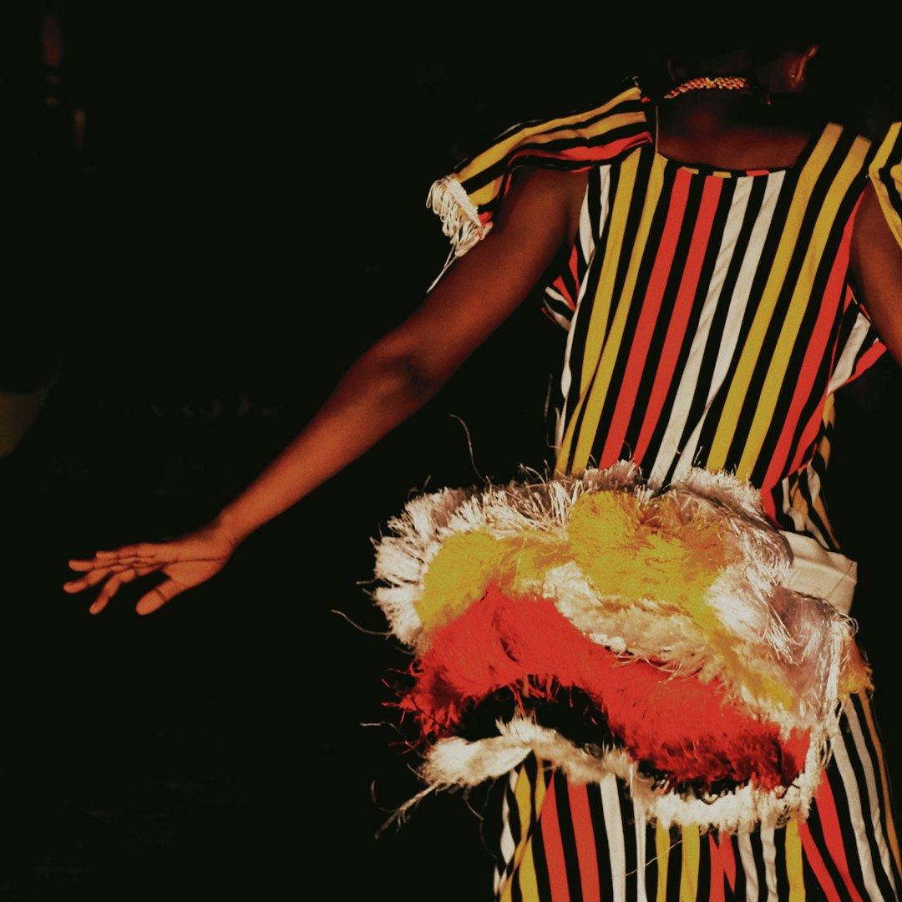

Arts & Craft
Experience Kente weaving, wood carving, bead making and handcrafted artifacts
Key Features
- Handwoven kente cloth
- Adinkra symbols and fabrics
- Wood carvings and sculptures
- Traditional bead making
Discover the Rich Traditions, arts, festivals and cuisine of Ghana.

Experience Kente weaving, wood carving, bead making and handcrafted artifacts
Key Features

learn about naming ceremonies, marriage rites and cultural practices.
Key Features

Throughout the year, Ghana celebrates numerous festivals honoring ancestors,
celebrating harvest, and strengthening community bonds.
Key Features

Throughout the year, Ghana celebrates numerous festivals honoring ancestors,
celebrating harvest, and strengthening community bonds.
Key Features
Discover the flavors of Ghana through its diverse and delicious traditional dishes
One-pot rice dish cooked in rich tomato sauce
Fermented corn and cassava dough with grilled fish
Pounded cassava, yam or plantain served with soup
Spicy fried riped plantain cubes served with groundnut
Blacked-eyed peas stew with fried plantains
Rice and beans with various accompaninents
From street food to fine dining, Ghana's food scene offers an unforgettable culinary journey